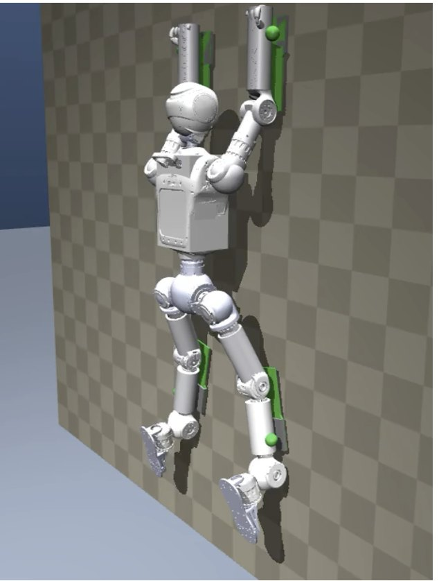
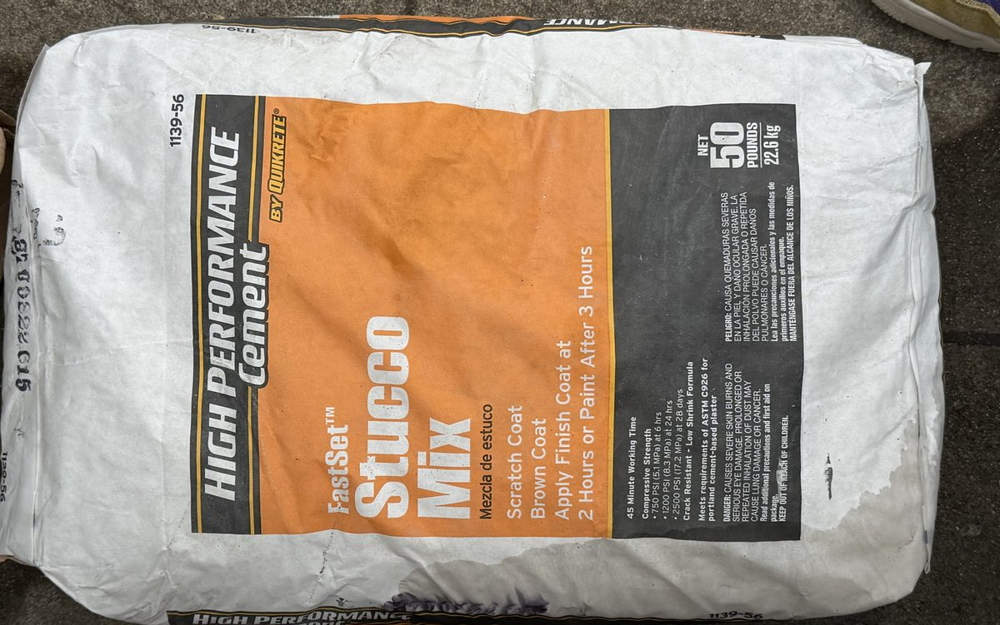
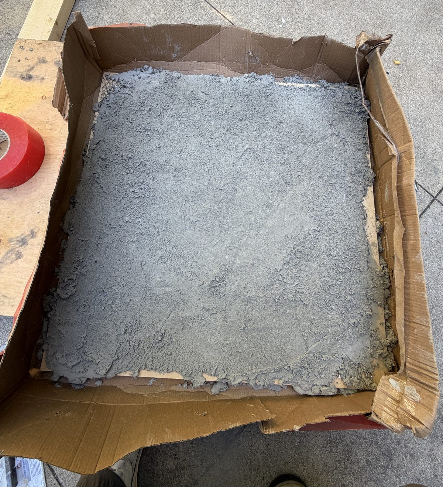
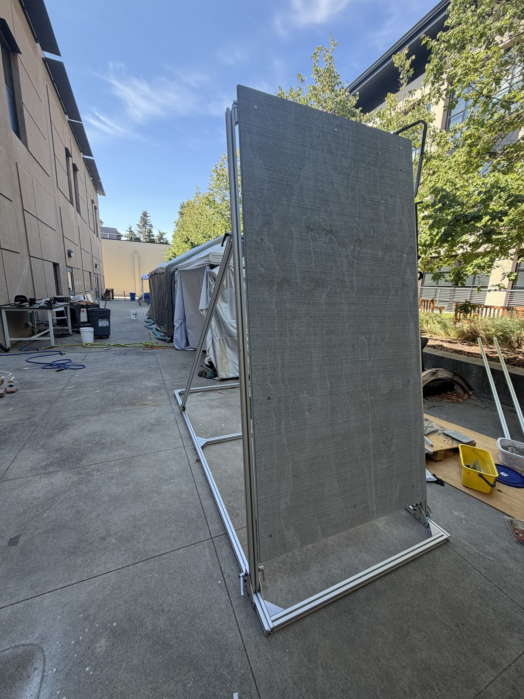

Up the corner of a tall box, one limb at a time.
Simulation · planned motion
Humanoid Wall Climbing
We are teaching a full-size humanoid robot to climb walls. Its hands and feet carry palms of tiny steel hooks, called micro-spines, that catch on the small bumps of rough surfaces such as concrete and stucco.
Micro-spines
A spine catches on a bump only when it is dragged along the surface the right way. Real walls are uneven, so each spine rides on its own spring and finds its own bump. Twelve such units make one palm. The design builds on compliant spines from Mark Cutkosky's lab at Stanford.
 One spine unit
One spine unit
The robot
Twelve units sit on one plate that pivots on the robot's limb, so the plate can lie flat against the wall. The robot learns each move in simulation first, before it touches a real wall.


Test walls
The surface matters most: the spines need small, firm bumps to catch on. We made a rough stucco panel by hand, close to a real outdoor wall, and built a full-height wall on an aluminum frame.







Work in progress · paper in preparation
1Stanford University2Cornell University